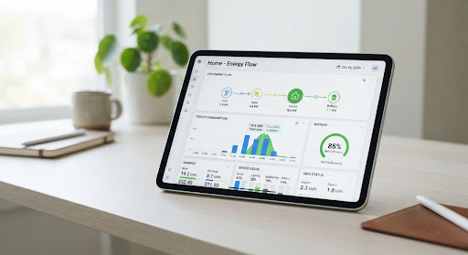

Empowering Australian Homes to Conserve Energy.
Make data-driven decisions about your appliance usage. Access comprehensive energy star ratings, efficiency trends, and transparent data to reduce your environmental footprint and lower utility costs.
D3 Brand Count

Australian Energy Trends
The Shift to High-Efficiency
monitoringOver the past decade, Australian households have increasingly adopted appliances with 4-star ratings or higher, driven by rising energy costs and environmental awareness. Refrigerators and washing machines lead this transition.
Average reduction in energy use for upgraded homes.
Standby Power Drain
Often referred to as 'vampire power', appliances left on standby can account for up to 10% of an average household's electricity bill. Televisions and entertainment systems are primary contributors.
Frequently Asked Questions
The most effective ways include upgrading to appliances with higher Energy Star ratings, minimizing standby power usage by switching off devices at the wall, and optimizing usage times for major appliances like washing machines to off-peak hours if your tariff allows.
The Energy Rating Label provides a comparative assessment of the appliance's energy efficiency and an estimate of its annual energy consumption. More stars mean the appliance is more efficient and will cost less to run compared to other models of similar size and capacity.
Generally, yes. Minimum Energy Performance Standards (MEPS) are regularly updated in Australia, meaning a new appliance on the market today is legally required to be more efficient than many older models. However, always check the specific rating label to compare.